Do primeiro contato ao acompanhamento longitudinal em Nutrição Holística
Um guia de utilização do HoloHacking ao longo de um ciclo de acompanhamento de até 10 atendimentos
Apresentação
Este guia é para a nutricionista que acompanha pacientes com o HoloHacking. Ele não é um manual de botões. Ele mostra como conduzir um acompanhamento de Nutrição Holística usando o HoloHacking: o que acontece antes da primeira consulta, o que fazer em cada encontro, como o sistema ajuda a organizar a jornada e onde a decisão é sempre da profissional.
Ao longo do texto, cada etapa responde a quatro perguntas: o que a nutricionista faz, o que a paciente faz, o que o sistema faz e o que aquela etapa produz.
O sistema organiza. O método orienta. A tecnologia sugere.
A nutricionista interpreta. A nutricionista decide.
A lógica de todo o HoloHacking
Os capítulos seguem a ordem natural de um acompanhamento. As caixas abaixo aparecem em todo o texto e ajudam a separar o que é do sistema, o que é da profissional e o que é da paciente.
Na prática
Como a etapa acontece no dia a dia do consultório.
O que o sistema faz
O que o HoloHacking registra, calcula ou organiza sozinho.
O que a nutricionista decide
O que só a nutricionista pode decidir.
O que a paciente percebe
O que a paciente vive, entende ou recebe.
Atenção metodológica
Um limite do método que não pode ser esquecido.
Resultado desta etapa
O que a etapa deixa registrado.
Próximo passo
Para onde a jornada segue.
Visão futura / experiência desejada
Algo que ainda não existe no produto. Está descrito como experiência desejada, não como função atual.
Atenção metodológica
Este é o primeiro modelo do documento. Ele foi escrito a partir de uma auditoria do sistema real (outubro de 2026, pacote metodológico HOLOS-V1 v6). Ele será refinado, condensado e revisado. Todas as pessoas e dados citados são fictícios.
Um ambiente profissional para a Nutrição Holística: reúne as informações do acompanhamento e transforma dados dispersos numa jornada organizada.
Num acompanhamento de nutrição, as informações chegam de muitos lugares: a conversa, o que a paciente conta antes da consulta, questionários, exercícios de reflexão, acordos, retornos. Sem um lugar para reuni-las, elas se perdem entre anotações, mensagens e memória.
O HoloHacking é esse lugar. Ele guarda a ficha da paciente, os atendimentos, o Mapeamento Holístico, o HOLOSCAN, as ferramentas de Corpo, Mente e Espírito, o Resultado HOLOS, a Conduta, os documentos e o histórico. E faz isso sem decidir pela nutricionista.
O HoloHacking não decide pela nutricionista. Ele deixa a decisão dela mais informada e mais bem registrada.
O método olha a paciente em três territórios. Eles organizam as ferramentas e a Tríade do HOLOSCAN, mas não são trilhos separados nem uma sequência obrigatória.
| Território | O que observa | Ferramentas |
|---|---|---|
| Corpo | rotina, hábitos, sinais percebidos, capacidade prática de mudar | OQ³ · Linha do Momentum · Mapa da Rotina |
| Mente | motivos, crenças, padrões de comportamento e emoção | PQQ (Escada dos Porquês) · Mapa de Crenças Alimentares · Gatilhos & Respostas |
| Espírito | sentido, valores, direção, apoio e pertencimento | Mapa do Propósito · Roda Holística da Vida · Carta ao Futuro Eu · Conexão & Pertencimento |
Do primeiro contato ao novo ciclo: a sequência natural de um acompanhamento no HoloHacking.
Atenção metodológica
A sequência é a ordem mais comum, não uma regra. Uma paciente pode chegar sem Mapeamento, uma consulta pode não ter HOLOSCAN, uma ferramenta pode esperar. A nutricionista conduz; o sistema acompanha.
| Etapa | O que acontece | Onde fica no HoloHacking |
|---|---|---|
| Agendamento | A consulta é marcada com tipo (Primeira consulta, Retorno, Reavaliação HOLOSCAN, Online) e duração. | Agenda |
| Cadastro | Nome (obrigatório), nascimento, telefone, e-mail, sexo, início do acompanhamento, queixa principal. | Pacientes → Cadastrar paciente |
| Mapeamento Holístico | Link individual, válido por 7 dias, enviado pelo WhatsApp. | Ficha → Mapeamento Holístico |
| Revisão pré-consulta | Leitura das respostas da paciente, que chegam à ficha. | Ficha → Mapeamento Holístico |
| Primeiro atendimento | "Iniciar atendimento" (na Agenda) ou "Novo atendimento" (na ficha). | Ficha → Atendimento ativo |
| HOLOSCAN | Questionário respondido na consulta; o sistema calcula e salva. | HOLOSCAN |
| Áreas para aprofundar | "Por onde investigar": os dois sistemas de nota mais baixa. | Resultado do HOLOSCAN |
| Ferramentas | "Próximos Passos HOLOS": uma ferramenta principal e até duas complementares. | Corpo, Mente, Espírito |
| Leitura profissional | Interpretação do HOLOSCAN, leitura de cada ferramenta, observações do Resultado. | HOLOSCAN, ferramentas, Resultado HOLOS |
| Conduta | Objetivo, estratégia, ações, recursos, orientações, retorno e acordos. | Ficha → Conduta |
| Resultado para a paciente | Resultado HOLOS (visão da paciente) e Resultado Final emitido, em PDF. | Resultado HOLOS e Resultado |
| Retornos e evolução | Novo atendimento, Mapeamento de retorno, revisão de acordos, comparação lado a lado. | Ficha → Atendimentos, Conduta, Evolução |
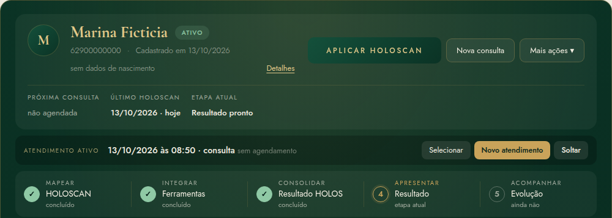
A preparação começa antes de a paciente entrar no consultório. Bem feita, ela devolve tempo à conversa.
O que a nutricionista decide
O que a paciente percebe
O que o sistema faz
Resultado desta etapa
Um retrato inicial, relatado pela própria paciente, pronto para orientar a primeira conversa. Não é diagnóstico nem conclusão.
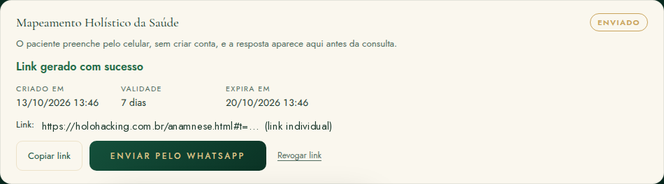
Na prática
A mensagem que o sistema prepara para o WhatsApp diz: "Olá, [primeiro nome]. Antes da nossa consulta, peço que preencha o seu Mapeamento Holístico da Saúde pelo link abaixo: [link]. As informações serão utilizadas para preparar seu atendimento." A nutricionista pode ajustar o texto antes de enviar.
Um formulário curto que a paciente responde antes da consulta. Ele prepara o atendimento e organiza o que ela relata. Não é diagnóstico nem ferramenta terapêutica.
O Mapeamento Holístico da Saúde reúne, antes do primeiro encontro, o que a paciente busca, como come, o que percebe no corpo, como está a sua saúde, a sua rotina e o seu momento de vida. Com isso, a nutricionista chega à consulta sabendo por onde começar e usa o tempo do encontro para escutar e aprofundar, não para preencher formulário.
| Mapeamento Holístico | HOLOSCAN | |
|---|---|---|
| Quando | Antes da consulta (e nos retornos) | Dentro do atendimento |
| Quem responde | A paciente, sozinha, pelo celular | A paciente, com a nutricionista |
| Para quê | Preparar a consulta e registrar o contexto | Organizar relatos em cinco sistemas, segundo o método |
| Gera nota? | Não | Sim: notas por sistema, Índice HOLOS e Tríade |
| Sugere ferramenta? | Não | Sim, pelo catálogo (PP-V1) |
O formulário de primeira consulta foi pensado para levar poucos minutos e é quase todo de toque, com perguntas de escolha. Nada é obrigatório, e a paciente pode responder "Prefiro não responder" nas questões sensíveis. Peso e medidas não são pedidos à paciente.
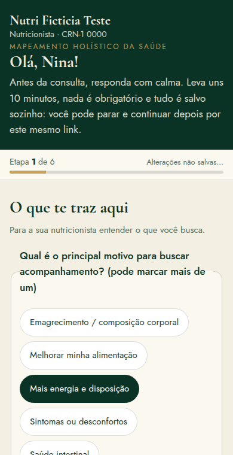
Quando a paciente envia, a aba "Mapeamento Holístico" da ficha mostra o cartão "Concluído" e as respostas organizadas por etapa, com a data do envio. O sistema avisa: "Como o paciente respondeu — nada aqui é diagnóstico nem conclusão." Os botões são "Ver resposta" / "Esconder resposta", "Levar para o atendimento" e "Enviar novo Mapeamento". Mapeamentos anteriores ficam guardados em "Mapeamentos anteriores".
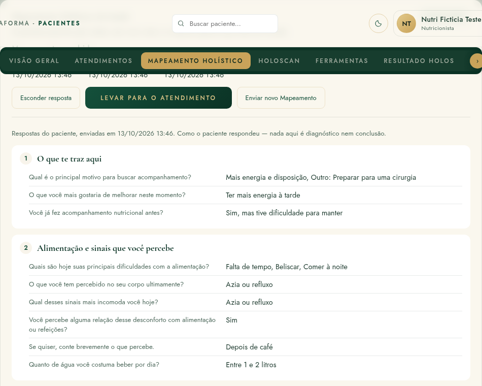
Na consulta, com o atendimento aberto, "Levar para o atendimento" transforma as respostas da paciente num rascunho do Mapeamento profissional daquele atendimento, marcado como "relato da paciente". A nutricionista revisa, completa com o que ouviu na conversa e conclui. A resposta original da paciente não é alterada.
O que o sistema faz
Quando a paciente já tem um Mapeamento profissional concluído, o próximo link enviado é automaticamente o de retorno: uma etapa só, "Desde a última consulta" (o que melhorou ou piorou, o quanto conseguiu colocar em prática, o que ajudou e o que dificultou, mudanças, medicamentos, algo novo), mais a revisão.
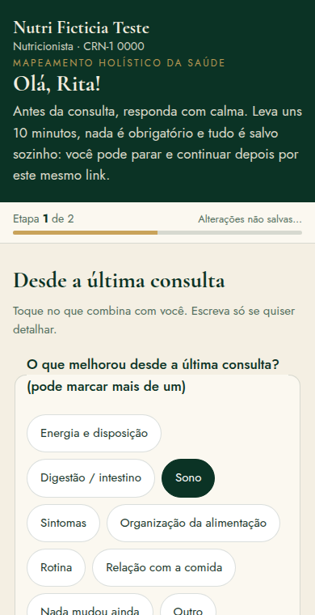
Atenção metodológica
O encontro em que a jornada ganha um ponto de partida. A nutricionista escuta, organiza e combina o primeiro passo.
Atenção metodológica
O HOLOSCAN não substitui a conversa clínica. Ele organiza relatos segundo o método; a escuta, o contexto e o julgamento profissional continuam sendo o centro da consulta.
O que a nutricionista decide
Resultado desta etapa
Na prática
Nem tudo precisa acontecer no primeiro encontro. Em consultas curtas, é comum aplicar o HOLOSCAN e construir uma Conduta simples, deixando a primeira ferramenta para o retorno. O sistema não exige ordem nem completude.
O HOLOSCAN é o questionário estruturado do método. Ele organiza o que a paciente relata em cinco sistemas e ajuda a decidir por onde começar a conversa. Ele não é diagnóstico, não é exame e não é inteligência artificial: é um cálculo determinístico, sempre igual para as mesmas respostas.
O HOLOSCAN organiza relatos. Não diagnostica. Princípio do método
O HOLOSCAN é aplicado dentro de um atendimento, com a paciente. As perguntas são curtas, sobre o que ela percebe no dia a dia, e cada resposta é escolhida numa escala de quatro pontos:
| Tipo de pergunta | Opções de resposta |
|---|---|
| Frequência | Nunca · Às vezes · Frequente · Sempre |
| Intensidade | Nada · Um pouco · Bastante · Muito |
Na versão vigente do pacote metodológico (HOLOS-V1 v6, publicada em 13/10/2026), o questionário tem 81 perguntas. Destas, 69 pontuam em algum sistema e 12 são só de contexto: ficam registradas para a nutricionista, mas não entram em nenhuma nota.
O que o sistema faz
Na ficha, o botão "Aplicar HOLOSCAN" leva à seção HOLOSCAN, onde a paciente responde às perguntas, organizadas em três blocos: raízes físicas, padrões emocionais e propósito, valores e fé. Cada toque fica salvo no aparelho. Ao final, "Gerar o mapa" calcula o resultado e "Salvar HOLOSCAN" grava a aplicação no servidor, ligada ao atendimento ativo.
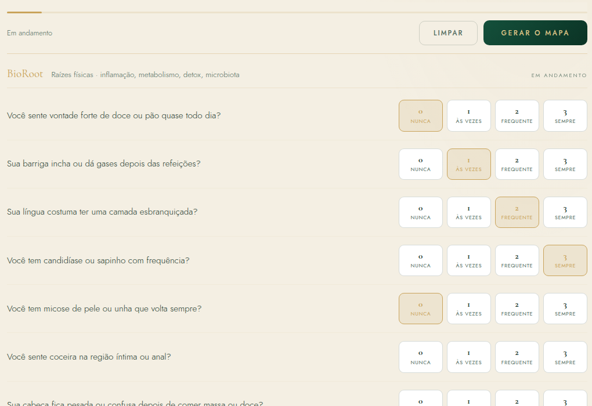
Na prática
Cada reaplicação começa do zero: nada é preenchido com respostas antigas. Não existe intervalo automático para reaplicar. A reaplicação é decisão profissional e contextual, até que uma regra oficial de periodicidade seja definida.
Os sistemas são categorias autorais do método. Cada um reúne um grupo de relatos. Nenhum deles mede órgão, função, substância ou doença.
Organiza relatos digestivos e alimentares (vontade de doce ou pão, inchaço e gases depois de comer, mal-estar com comida gordurosa, cabeça pesada depois de massa ou doce) e relatos de mucosas e couro cabeludo. Não é detector de fungo: não diagnostica candidíase, infecção fúngica nem disbiose. Pontuam 8 perguntas.
Organiza relatos de dor, rigidez, desconforto e reatividade percebida: dor articular sem esforço, corpo travado ao acordar, azia, dor de cabeça frequente, gengiva que sangra, piora percebida com ultraprocessados. Não mede inflamação nem pH: "ácido" é nomenclatura do método. Pontuam 8 perguntas.
Organiza relatos de energia, fome, saciedade, comportamento alimentar e refeições: sono depois do almoço, fome pouco depois de comer, acordar cansada, perceber (ou não) fome e saciedade, começar a comer sem pausa. Não diagnostica resistência à insulina, diabetes, alterações da tireoide ou outras condições metabólicas. Exames não participam do HOLOSCAN. Pontuam 7 perguntas.
Organiza relatos de retenção percebida, eliminação e sensibilidade a substâncias: pernas inchadas no fim do dia, rosto inchado ao acordar, intestino preso, reação forte a café, medicamento ou pouca bebida alcoólica, incômodo com cheiros. Não mede toxinas, função hepática nem fluxo linfático: "Detox" é nomenclatura do método. Pontuam 6 perguntas.
Organiza relatos de pensamento, emoção, comportamento, autorregulação, identidade, conexão, valores e sentido: cabeça que não desliga, preocupação, comer para se acalmar, autocrítica, limites, mágoa, culpa depois de comer, direção e propósito. Não diagnostica transtorno mental e não mede saúde, valor ou qualidade espiritual. Pontuam 40 perguntas.
Nota do sistema (0 a 10)
É a posição do sistema dentro da escala do instrumento. Quanto mais baixa, mais carga a paciente relatou nas perguntas daquele sistema. Só existe nota quando pelo menos 80% das perguntas do sistema foram respondidas.
Índice HOLOS (0 a 100)
É a média dos cinco sistemas, com o mesmo peso para cada um. Só é calculado quando os cinco sistemas têm nota. Não é percentual de saúde.
Tríade (Corpo · Mente · Espírito)
Agrupa as perguntas pelo bloco em que aparecem no questionário (36 de Corpo, 19 de Mente e 14 de Espírito). Ajuda a contextualizar; não escolhe ferramenta nem muda a prioridade.
Atenção metodológica
Uma nota baixa não significa doença, gravidade nem risco. Uma nota alta não significa ausência de doença nem "sistema saudável". A nota é sempre sobre os relatos daquela aplicação, naquele momento.
Em cada sistema, o Resultado mostra até três sinais que mais contribuíram para a nota: as perguntas em que a paciente relatou mais carga. Eles ajudam a entender por que aquele sistema apareceu, sem afirmar causa.
Algumas perguntas são só de contexto. Elas aparecem para a nutricionista num bloco separado, "Contexto, sem pontuar", e não alteram nota, Índice, Tríade, prioridade, sinais nem Próximos Passos. São, por exemplo:
O que é contexto informa a conversa. Não vira motivo da nota.
Com as notas calculadas, o sistema ordena os cinco sistemas da nota mais baixa para a mais alta. Os dois primeiros são a 1ª e a 2ª área para aprofundar (em caso de empate, vale a ordem oficial do método).
Atenção metodológica
Prioridade aqui é prioridade de investigação, não de gravidade ou de risco. Quando um sistema não teve nenhuma carga (nota 10,0), o Resultado avisa que ele só aparece na lista pela ordem de desempate; a paciente não lê que essa área "aparece para aprofundar".
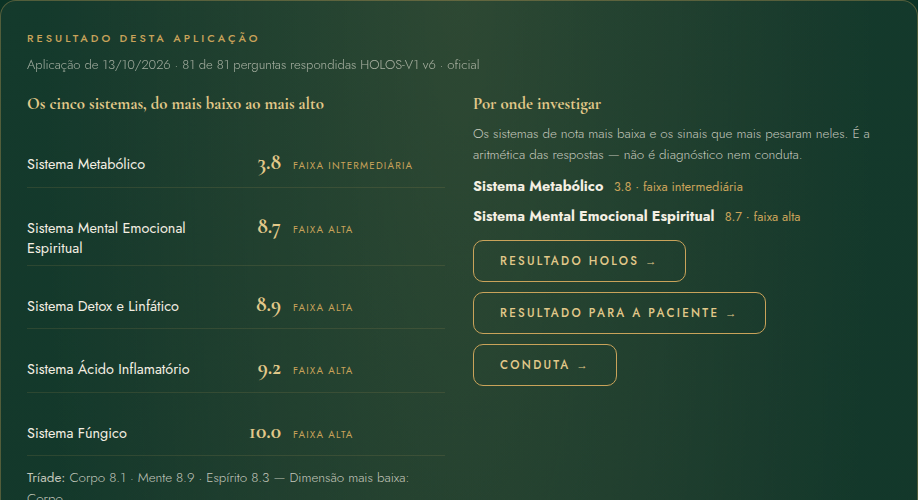
O que a nutricionista decide
A nutricionista lê as áreas junto com a conversa e o Mapeamento. Ela pode concordar com a ordem, aprofundar primeiro outra área que a conversa mostrou ser mais importante, ou esperar para decidir. O HOLOSCAN não substitui a conversa clínica.
Como o resultado leva às ferramentas: pelo sistema, pelo catálogo, e sempre com a decisão da nutricionista no meio.
Os Próximos Passos HOLOS (catálogo PP-V1, com 30 regras aprovadas) funcionam assim:
A ferramenta é sugerida pelo catálogo para aprofundar este sistema. Texto que acompanha cada sugestão no sistema
Atenção metodológica
Nenhuma pergunta isolada escolhe uma ferramenta. Os sinais que mais pontuaram mostram por que o sistema apareceu como prioridade; a ferramenta vem do catálogo, pelo sistema. Nenhuma ferramenta é obrigatória, e a ordem é uma recomendação, não uma sequência de atendimento.
| Sistema | Ferramentas do catálogo, na ordem de sugestão |
|---|---|
| Fúngico | Mapa da Rotina · Gatilhos & Respostas · Mapa de Crenças Alimentares · Linha do Momentum · OQ³ · Conexão & Pertencimento |
| Ácido Inflamatório | Mapa da Rotina · Linha do Momentum · Gatilhos & Respostas · Roda Holística da Vida · Conexão & Pertencimento · OQ³ |
| Metabólico | Mapa da Rotina · Gatilhos & Respostas · Mapa de Crenças Alimentares · Linha do Momentum · OQ³ · Carta ao Futuro Eu |
| Detox e Linfático | Mapa da Rotina · Linha do Momentum · OQ³ · Roda Holística da Vida · Conexão & Pertencimento · Gatilhos & Respostas |
| Mental Emocional Espiritual | PQQ · Mapa de Crenças Alimentares · Gatilhos & Respostas · Mapa do Propósito · Carta ao Futuro Eu · Conexão & Pertencimento |
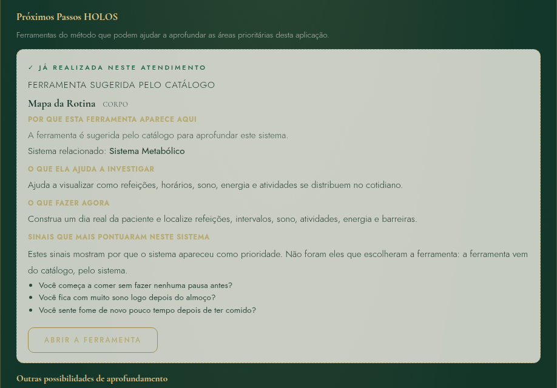
O que a nutricionista decide
E então decide: aplicar agora, aplicar no retorno ou não aplicar. Seguir, abrir outra ferramenta ou ignorar a sugestão não altera o Resultado do HOLOSCAN.
Dez ferramentas para aprofundar o que o HOLOSCAN e a conversa mostraram. Nenhuma é diagnóstica, nenhuma é obrigatória e nenhuma transforma a nutrição em psicoterapia.
O que o sistema faz
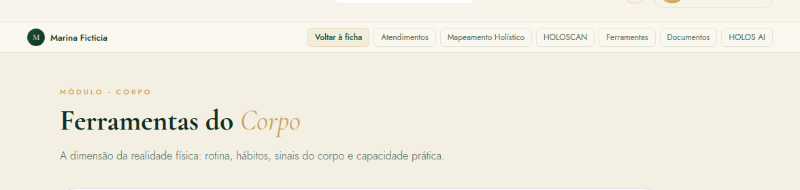
Corpo
Mente
Espírito
Atenção metodológica
Nenhuma ferramenta gera resultado automático interpretado. O sistema organiza o que foi registrado; a leitura é da nutricionista. Onde ainda não há texto aprovado sobre o significado de uma ferramenta, o sistema simplesmente não mostra o bloco, em vez de inventar uma interpretação.
O método organiza; a nutricionista interpreta e decide. Essas duas etapas são dela.
A leitura profissional é o que a nutricionista entendeu, com as palavras dela. No HoloHacking ela aparece em três lugares:
| Onde | O que registra |
|---|---|
| HOLOSCAN → "Sua interpretação" | A leitura clínica da aplicação. Fica guardada junto do HOLOSCAN e vai para o relatório. |
| Cada ferramenta → "Leitura profissional" | "O que chamou atenção", "Prioridade" e "Próximo passo" (em sete ferramentas do catálogo). |
| Resultado HOLOS → observações | "Leitura profissional da nutricionista", "Pontos para acompanhar" e "Questões para aprofundar" (esta última só na visão profissional). |
A leitura profissional nunca é gerada pelo sistema. Ela é escrita pela nutricionista.
A Conduta registra o que foi decidido para a etapa. Ela pertence a um atendimento e tem revisões: depois de salva, não é editada; uma mudança vira nova revisão.
| Campo | Para que serve |
|---|---|
| Prioridades selecionadas | O que esta etapa vai priorizar. |
| Objetivo da etapa | O que se quer alcançar até o próximo encontro, em linguagem simples. |
| Estratégia nutricional | O caminho escolhido para chegar lá. |
| Ações | O que a paciente vai experimentar. |
| Recursos | Materiais e apoios combinados. |
| Exames solicitados (quando pertinente) | Registro administrativo; exames não entram no HOLOSCAN nem no Resultado HOLOS. |
| Monitoramento e Retorno | O que observar e quando reavaliar. |
| Orientações profissionais e Observações | O que a nutricionista quer deixar registrado. |
| Ferramentas relacionadas | As ferramentas que embasaram a decisão. |
| Acordos | Cada acordo tem descrição, responsável, prazo, acompanhamento e estado: Proposto, Acordado, Em acompanhamento, Concluído, Revisto ou Encerrado. |
O que o sistema faz
O que a nutricionista decide
A Conduta é da nutricionista. O HOLOSCAN e as ferramentas informam a decisão; não a determinam.
O momento em que o que foi registrado vira uma síntese organizada, com uma versão para a nutricionista e outra para a paciente.
Cada parte do Resultado HOLOS segue a mesma lógica, do dado ao próximo passo:
Para cada sistema, por exemplo, o Resultado mostra: o que o eixo organiza; a nota nesta aplicação; o que mais contribuiu; o que isso significa dentro do HOLOSCAN; o que não significa; o que pode merecer aprofundamento; e o próximo passo pelo catálogo.
O que o sistema faz
Resultado do método
Notas, Índice, Tríade, áreas para aprofundar, sinais e ferramentas sugeridas. É calculado e sempre igual para as mesmas respostas.
O que a nutricionista decide
Leitura profissional
O que a nutricionista entendeu ao juntar o método, a conversa e o contexto. Escrita por ela.
Resultado desta etapa
Conduta
O que foi decidido e combinado para a etapa. Também da nutricionista, com a paciente.
Resultado do método ≠ leitura profissional ≠ Conduta Cada camada tem um autor diferente
Na aba "Resultado HOLOS" da ficha, "Gerar Resultado HOLOS" abre um formulário em que a nutricionista escolhe:
Depois vêm "Pré-visualizar", "Salvar rascunho" e "Salvar Resultado HOLOS". Um resultado salvo fica congelado; ele pode ser marcado como revisado, e uma mudança vira nova versão, com o histórico preservado.
Atenção metodológica
Não existe fórmula que junte Corpo, Mente e Espírito numa conclusão automática. O Resultado organiza; quem integra é a nutricionista.
A visão profissional reúne tudo o que é preciso para decidir, com a separação clara entre o que pontuou e o que é só contexto.
| Seção | O que mostra |
|---|---|
| Resumo para decisão | 1ª e 2ª área para aprofundar, próximo passo principal, ferramentas complementares, ferramentas já aplicadas e estado do processo. |
| Por que o sistema chegou a isso | Visão geral do HOLOSCAN e os cinco sistemas, cada um com "Pontuou neste sistema" e "Contexto, sem pontuar". |
| Resultados das ferramentas | Por território, com o panorama das ferramentas aplicadas. |
| Síntese HOLOS | Onde aprofundar, por que essas áreas apareceram, o que já foi aprofundado, o que ainda pode ser aprofundado, leitura profissional. |
| Leitura profissional | As observações da nutricionista. |
| Conduta | Atalho para a Conduta do atendimento. |
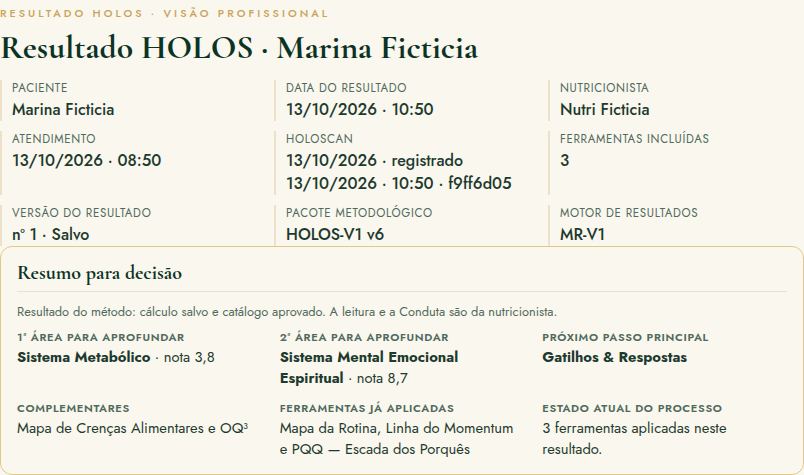
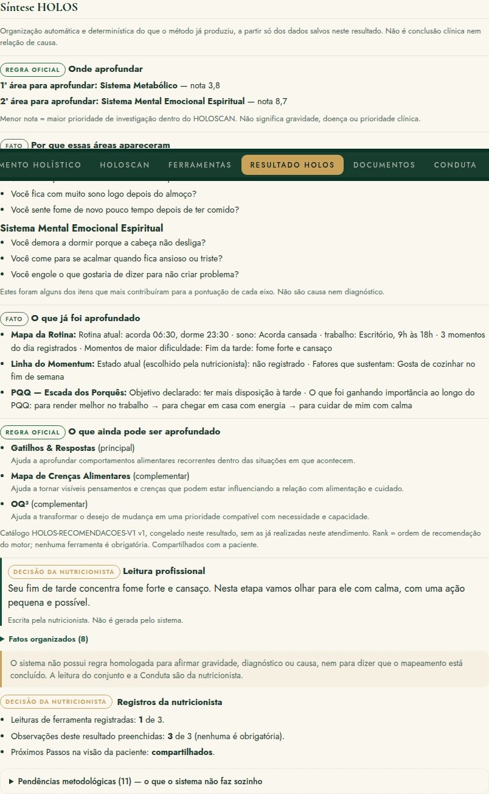
Na prática
Quando um sistema aparece na 2ª posição sem ter tido nenhuma carga (nota 10,0), a visão profissional avisa que ele está ali só pela ordem oficial de desempate. Isso evita ler como prioridade algo que a paciente não relatou.
Uma versão em linguagem humana: o que apareceu, o que isso significa, o que não significa, e o que foi combinado.
| Seção | O que a paciente entende |
|---|---|
| O que entendemos nesta etapa | Onde o acompanhamento está focado e quais ferramentas foram feitas. |
| Áreas para aprofundar | As áreas que aparecem primeiro, com o que cada eixo reúne, o que mais contribuiu, o que significa e o que não significa. |
| O que descobrimos com as ferramentas | O que foi aprendido, só das ferramentas que a nutricionista escolheu mostrar. |
| Nosso foco agora | A leitura que a nutricionista escreveu para ela. |
| O que ficou combinado | Objetivo, estratégia, ações e acordos da Conduta. |
| O que observar até o próximo encontro | Os pontos para acompanhar. |
| Detalhes do mapa | Os cinco sistemas, o Índice e a Tríade, para quem quiser ver. |
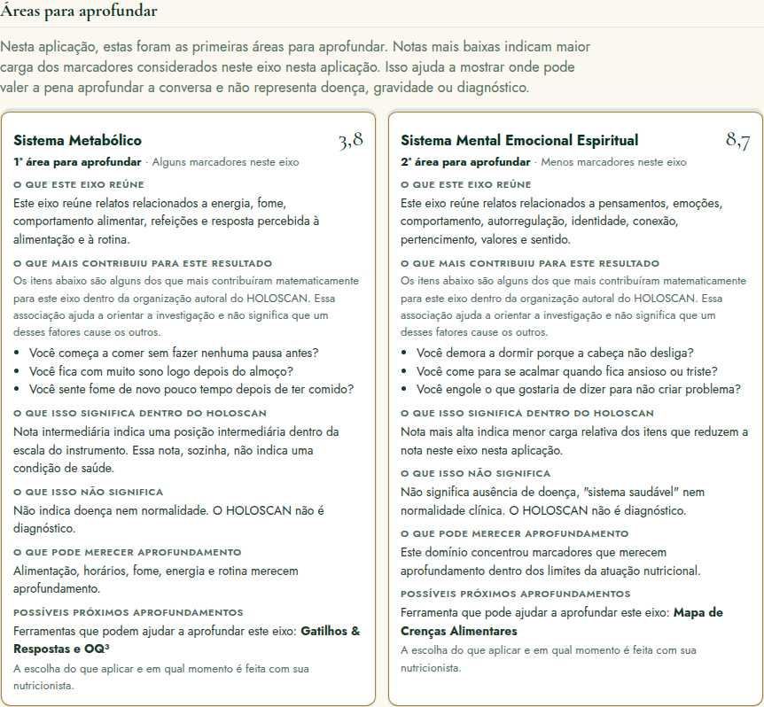
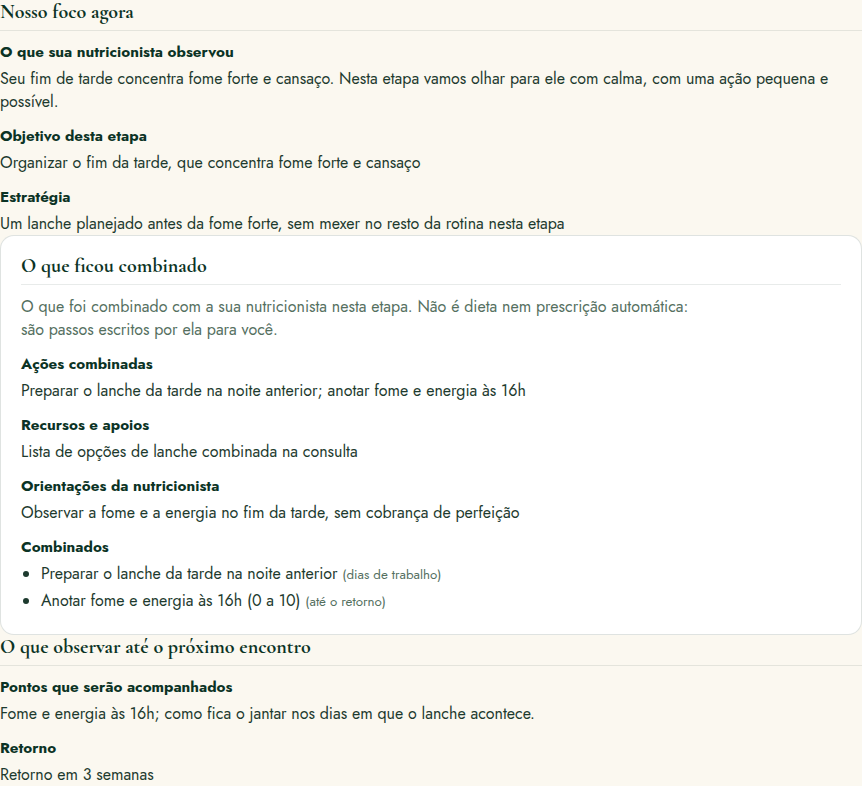
O que a paciente percebe
Do resultado preparado na ficha à entrega para a paciente.
| Resultado HOLOS | Resultado Final | |
|---|---|---|
| Onde | Aba "Resultado HOLOS" da ficha | Menu "Resultado" |
| O que é | A síntese clínica da etapa, com visão profissional e visão da paciente | A emissão para a paciente: congela o Resultado HOLOS (visão da paciente), a Conduta do mesmo atendimento e a identidade profissional do Perfil |
| Pode mudar? | Sim, por nova versão | Não: cada emissão é imutável; uma mudança vira nova emissão |
| "Imprimir ou salvar em PDF" (impressão do navegador) | "Baixar PDF" e "Imprimir" |
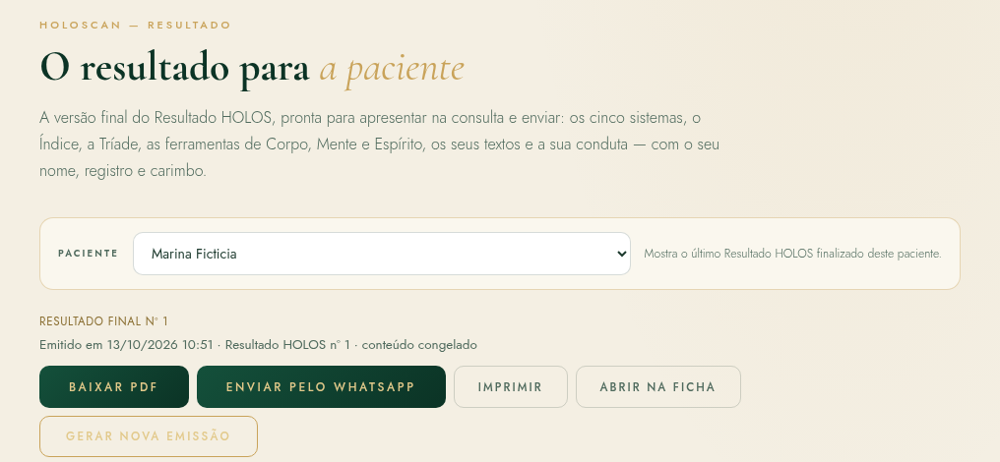
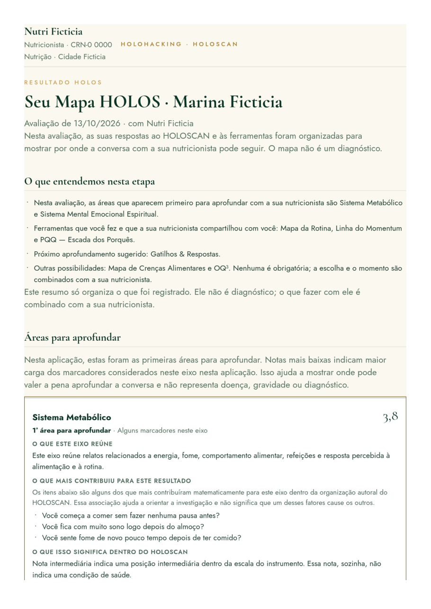
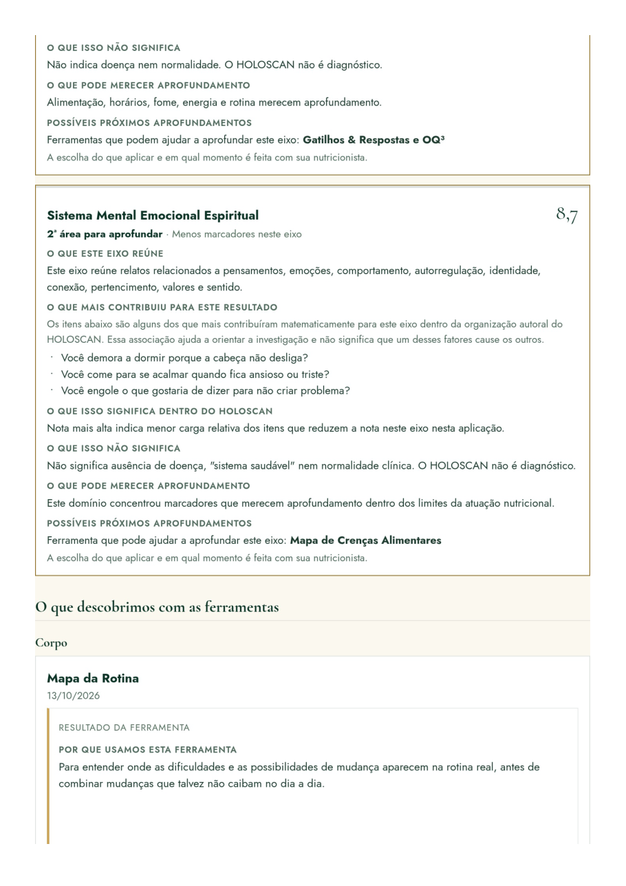
O que o sistema faz
| Registro | O que faz | O que não faz |
|---|---|---|
| Relatórios clínicos | Relatório profissional com fontes escolhidas uma a uma; prévia, rascunho e emissão imutável (retificação gera nova emissão). | Não interpreta exames. |
| Documentos | Guarda exames, laudos, receitas e outros arquivos (até 10 MB), com tipo, título e data. | Não lê nem interpreta os arquivos; eles não entram no HOLOSCAN nem no Resultado. |
| Linha do tempo | Mostra os registros consolidados, com filtros por tipo. | Não cria registro novo. |
| HOLOS AI | Monta um texto de contexto do caso para a nutricionista copiar. | Não envia nada sozinho; a abertura direta em assistentes externos está "Em desenvolvimento". |
Uma jornada de até 10 atendimentos não é um protocolo. É um exemplo de caminho possível, que cada nutricionista adapta a cada paciente.
Este é um exemplo de jornada possível. A escolha depende do caso.
A nutricionista interpreta e decide.
Princípio dos retornos
Atenção metodológica
| Recurso | Como ajuda no retorno |
|---|---|
| Agenda | Tipos "Retorno" e "Reavaliação HOLOSCAN"; reagendar mantém o original no histórico. |
| Mapeamento de retorno | Enviado automaticamente no formato curto "Desde a última consulta" quando a paciente já tem Mapeamento concluído. |
| Mapeamento profissional de retorno | Tipo "Retorno", com o bloco "Desde a última consulta". |
| Conduta anterior | Aparece ao lado, com "Levar acordos para esta conduta" e a decisão de continuar, substituir ou encerrar cada acordo. |
| Nova aplicação | HOLOSCAN e ferramentas podem ser reaplicados; o histórico de cada um fica preservado. |
| Resultado HOLOS | Uma nova aplicação gera uma nova versão do Resultado; as anteriores ficam guardadas. |
| Evolução | Compara lado a lado: atendimento anterior × atual, linha de base × atual, dois atendimentos ou duas datas. |
| Dashboard | Mostra em que etapa cada paciente está (Aguardando Mapeamento, Mapeamento recebido, HOLOSCAN em andamento, Resultado pronto, Resultado apresentado, Aguardando retorno). |
Atenção metodológica
Evolução mostra lado a lado, sem calcular diferenças de nota, Índice, Tríade ou faixa. A regra de comparabilidade entre aplicações ainda não foi homologada. Aplicações feitas em versões diferentes do pacote metodológico não são comparadas como se fossem equivalentes.
Visão futura / experiência desejada
O HoloHacking ainda não organiza a jornada em ciclos (contagem de atendimentos, marcos de ciclo, síntese de fechamento). Hoje, o ciclo existe na condução da nutricionista e no histórico registrado; não há uma função de "ciclo".
Uma estrutura narrativa para pensar o acompanhamento ao longo do tempo. Não é regra clínica.
Na prática
Um ciclo pode ter menos encontros, pode pular etapas ou voltar a uma delas. Uma paciente pode precisar de três consultas de "aprofundar" antes de "testar"; outra pode chegar à autonomia cedo. A numeração ajuda a pensar, não a cobrar.
Para cada encontro: o que revisar antes, o que fazer durante, o que registrar depois, o objetivo e o resultado esperado do processo.
Na prática
Antes - Mapeamento recebido e lido. - Revisão do contexto: queixa, objetivo, rotina, sinais relatados.
Durante - Conversa. - HOLOSCAN, quando pertinente. - Leitura das áreas para aprofundar. - Escolha do primeiro aprofundamento e, se couber, aplicação de uma ferramenta.
Depois - Leitura profissional, Conduta e acordos. - Resultado para a paciente.
O que a nutricionista decide
Objetivo do encontro: criar um ponto de partida organizado.
Resultado desta etapa
Resultado esperado do processo: a paciente entende qual é o foco inicial e o que observar até o retorno.
O que o sistema faz
Atendimento aberto · Mapeamento levado para o atendimento · HOLOSCAN salvo · ferramenta concluída (se houver) · Conduta · Resultado HOLOS · Resultado Final em PDF.
Revisar os acordos, a percepção da paciente, as barreiras, as mudanças observadas e a ferramenta anterior.
O primeiro aprofundamento respondeu à pergunta que motivou a escolha?
Possibilidades:
O que o sistema faz
Mapeamento de retorno · Conduta anterior ao lado da nova · "Próximos Passos HOLOS" do primeiro resultado (sem as ferramentas já feitas) · nova ferramenta.
Resultado desta etapa
Mais clareza sobre o padrão investigado.
O foco é o que aconteceu quando os acordos encontraram a vida real: o que foi tentado, o que aconteceu, adesão, barreiras, contexto e aprendizado.
Resultado desta etapa
A paciente vê que "não deu certo" também é informação, e a Conduta passa a refletir o que é possível de verdade.
Começar a conectar alimentação, rotina, comportamento, emoções, contexto, prioridades e as respostas aos acordos. A aba Evolução ajuda a ver o caminho até aqui, lado a lado.
O que estamos entendendo agora que não estava claro no início?
Resultado desta etapa
Uma leitura mais integrada da paciente, registrada pela nutricionista, que conecta o que antes parecia solto.
Um checkpoint. Rever o ponto de partida, as áreas iniciais, as ferramentas usadas, os acordos, as mudanças percebidas, as dificuldades que persistem, o aprendizado da paciente e a necessidade de novo aprofundamento.
Quando considerar uma nova aplicação do HOLOSCAN? Por exemplo, quando a conversa sugere que o retrato inicial mudou, quando a paciente relata mudanças importantes de rotina ou de momento de vida, ou quando a nutricionista quer revisar as áreas para aprofundar com dados novos.
Atenção metodológica
A reaplicação é decisão profissional e contextual, até que uma regra oficial de periodicidade seja definida. O HoloHacking não sugere nem exige intervalo. A Agenda tem o tipo "Reavaliação HOLOSCAN" para quando a nutricionista decidir.
Depois do primeiro ciclo: aprofundar algo que permaneceu, investigar a segunda prioridade, trabalhar uma barreira nova ou usar outra ferramenta quando pertinente.
Na prática
O acompanhamento não precisa repetir a primeira consulta. O que já está registrado (Mapeamento, HOLOSCAN, ferramentas, Condutas) continua disponível; o novo encontro parte dali.
Foco em consistência, sustentabilidade, obstáculos recorrentes, autonomia e pequenos ajustes. Ferramentas podem ser revisitadas quando agregarem informação.
Resultado desta etapa
Acordos que já se sustentam saem do foco; os que ainda pesam são simplificados.
No início
A nutricionista ajuda a organizar e a enxergar.
Mais adiante
A paciente começa a reconhecer os próprios padrões.
Possíveis resultados do processo: maior percepção, capacidade de antecipar gatilhos, mais consciência das escolhas, rotina mais coerente, decisões mais autônomas.
Atenção metodológica
Esses são resultados possíveis do processo, não promessas de resultado clínico.
Rever a jornada completa: início versus momento atual.
Atenção metodológica
Respeitar o versionamento. Se a primeira aplicação foi feita numa versão anterior do pacote metodológico, os números não são comparados como se fossem equivalentes. A Evolução mostra lado a lado, sem diferença calculada.
Uma consulta de síntese. Perguntas que orientam:
O que o fechamento produz:
| Bloco | Conteúdo |
|---|---|
| Síntese do ciclo | De onde partimos, o caminho percorrido, o que foi aprendido. |
| Foco atual | O que continua importante agora. |
| Conquistas e mudanças observadas | Nas palavras da paciente e no registro da nutricionista. |
| Pontos a continuar observando | O que ainda pede atenção. |
| Plano para a próxima fase | Novo ciclo, manutenção, intervalo maior ou encaminhamento. |
O que o sistema faz
Hoje, o fechamento pode ser registrado com os recursos existentes: a Conduta do atendimento (objetivo, orientações, retorno), as observações do Resultado HOLOS e um Relatório clínico emitido com as fontes escolhidas.
Visão futura / experiência desejada
Um documento próprio de Síntese do Ciclo, gerado a partir do histórico e editado pela nutricionista, ainda não existe no produto.
O que um ciclo de acompanhamento pode produzir, descrito como resultado do processo, não como promessa.
Atenção metodológica
Este capítulo não promete cura, perda de peso, reversão de doença, melhora hormonal, melhora metabólica nem qualquer resultado clínico garantido.
Resultado desta etapa
Resultados de compreensão - Maior compreensão da própria rotina. - Identificação de padrões alimentares. - Reconhecimento de gatilhos. - Mais clareza sobre fome e saciedade, quando pertinente. - Melhor compreensão das próprias barreiras.
Resultado desta etapa
Resultados de comportamento - Maior consciência das escolhas. - Estratégias mais realistas, que cabem na rotina. - Capacidade de perceber recaídas sem transformar tudo em fracasso.
Resultado desta etapa
Resultados de autonomia - Mais autonomia nas decisões do dia a dia. - Maior participação na construção da própria Conduta. - Capacidade de antecipar situações difíceis.
Resultado desta etapa
Resultados do acompanhamento - Histórico organizado do processo. - Clareza sobre o que funcionou e o que não funcionou. - Próximos passos definidos.
Atenção metodológica
Resultados clínicos. Resultados clínicos dependem do quadro individual, avaliação profissional, adesão, contexto e outros fatores e não são garantidos pelo método ou pela plataforma.
Uma paciente inventada, acompanhada pela mesma nutricionista ao longo de dez encontros. A história tem avanços, recaídas e ajustes, como costuma acontecer.
Atenção metodológica
Marina é fictícia. Nome, idade, rotina, relatos e números foram criados para este documento. Nada aqui é diagnóstico, e nenhuma escolha de ferramenta é regra: são decisões possíveis de uma nutricionista diante deste caso.
Marina tem 37 anos, trabalha num escritório das 9h às 18h e mora com o companheiro e um filho de 6 anos. Procurou acompanhamento porque quer "ter mais energia à tarde e parar de beliscar à noite". Já fez dietas antes e "sempre largou no meio". Acorda cansada, almoça rápido, sente fome forte no fim da tarde e, à noite, come "o que tiver" enquanto organiza a casa.
O que a paciente percebe
Ao final do ciclo, Marina não recebeu um "diagnóstico" nem uma lista de proibições. Recebeu, a cada etapa, o que foi entendido, o que foi combinado e o que observar. E aprendeu a ler os próprios padrões.
O ciclo inteiro em duas tabelas: o que se faz em cada encontro e o que cada encontro deixa.
| Atend. | Objetivo | Dados consultados | Recurso do HoloHacking | Possível ferramenta |
|---|---|---|---|---|
| 1 | Compreender e priorizar | Mapeamento, conversa | Atendimento, HOLOSCAN, Próximos Passos, Conduta, Resultado HOLOS, Resultado Final | A principal sugerida pelo catálogo, se couber (ex.: Mapa da Rotina) |
| 2 | Aprofundar | Mapeamento de retorno, acordos, ferramenta anterior | Conduta anterior ao lado, Próximos Passos sem as já feitas | Complementar do catálogo (ex.: Gatilhos & Respostas) |
| 3 | Testar e observar | O que foi tentado, adesão, barreiras | Nova aplicação de ferramenta, revisão de acordos | Linha do Momentum, reaplicação quando fizer sentido |
| 4 | Integrar | Histórico até aqui | Evolução lado a lado | PQQ ou outra do território que a conversa pedir |
| 5 | Revisar o primeiro ciclo | Ponto de partida × agora | Reavaliação HOLOSCAN (se decidida), nova versão do Resultado | Nenhuma nova, em geral |
| 6 | Nova camada | O que permaneceu, 2ª prioridade | Próximos Passos, ferramentas | Mapa de Crenças Alimentares, Gatilhos & Respostas |
| 7 | Consolidar | Acordos sustentados e recorrências | Estados dos acordos, Conduta | Roda Holística da Vida, revisitar uma anterior |
| 8 | Autonomia | Estratégias da própria paciente | Conduta construída com a paciente | Conexão & Pertencimento |
| 9 | Reavaliação global | Início × momento atual | HOLOSCAN (se indicado), Evolução "Linha de base × atual" | Nenhuma nova, em geral |
| 10 | Fechamento e próxima fase | Todo o histórico | Conduta, observações do Resultado, Relatório clínico | Carta ao Futuro Eu, Mapa do Propósito (opcionais) |
| Atend. | Decisão profissional | Resultado produzido | O que a paciente leva | Próximo passo |
|---|---|---|---|---|
| 1 | Primeiro foco e primeiro acordo | HOLOSCAN, Conduta, Resultado HOLOS | PDF com o foco e o combinado | Observar até o retorno |
| 2 | Manter o eixo, complementar ou mudar de área | Nova ferramenta, Conduta revista | Clareza sobre o padrão | Testar o acordo novo |
| 3 | Calibrar a exigência | Acordos ajustados ao possível | "Não deu certo" também é informação | Sustentar o essencial |
| 4 | Conectar os achados | Leitura integrada registrada | Entendimento do próprio caminho | Preparar a revisão |
| 5 | Reaplicar ou não o HOLOSCAN; novo foco | Checkpoint do ciclo | O que mudou, o que fica | Abrir nova camada |
| 6 | Qual camada aprofundar | Nova ferramenta, novos acordos | Um padrão novo nomeado | Observar em situações reais |
| 7 | O que sai do foco | Acordos concluídos ou simplificados | Rotina mais estável | Espaçar consultas, se fizer sentido |
| 8 | Dar espaço à autonomia | Acordo proposto pela paciente | Confiança nas próprias estratégias | Reavaliar o percurso |
| 9 | Como ler o início × agora | Comparação descritiva, lado a lado | Visão do caminho percorrido | Fechar o ciclo |
| 10 | Novo ciclo, manutenção, intervalo ou encaminhamento | Síntese do ciclo e plano | Síntese, conquistas e o que continuar | Próxima fase |
Três territórios, não três trilhos. A mesma paciente transita entre eles conforme o momento pede.
Corpo
Muitas vezes o ponto de partida: rotina, horários, fome, energia. É onde as mudanças precisam caber.
Mente
Aparece quando o "porquê" e os padrões pedem atenção: crenças, gatilhos, sentido da mudança.
Espírito
Ganha espaço quando direção, valores, apoio e pertencimento sustentam (ou dificultam) o caminho.
No caso de Marina, a jornada começou pelo Corpo (Mapa da Rotina), passou pela Mente (Gatilhos & Respostas, PQQ, Crenças), voltou ao Corpo quando a vida apertou (Linha do Momentum), abriu o Espírito (Roda, Conexão, Carta) e voltou à rotina na manutenção.
Atenção metodológica
Não existe alternância obrigatória Corpo → Mente → Espírito. O acompanhamento é adaptativo: segue o que a paciente mostra, não um roteiro.
A força do HoloHacking aparece com o tempo: cada encontro acrescenta uma camada ao histórico.
A cada encontro, o HoloHacking acumula: o atendimento; os relatos (Mapeamentos); as aplicações do HOLOSCAN; as ferramentas; a leitura profissional; a Conduta e os acordos, com os seus estados; os Resultados HOLOS e as emissões; os documentos; e a linha do tempo.
Atenção metodológica
O sistema guarda e mostra o histórico; não infere causalidade. Quem reconhece padrões e decide o que fazer com eles é a nutricionista, com a paciente.
O que o sistema faz
Quem faz o quê na jornada. Esses papéis não se invertem.
O algoritmo não decide tratamento. A tecnologia apoia; a nutricionista conduz.
O que o HoloHacking não faz, e o que a nutricionista faz quando algo ultrapassa a nutrição.
Atenção metodológica
O HoloHacking: - não diagnostica; - não substitui avaliação clínica; - não substitui o julgamento profissional; - não faz psicoterapia; - não transforma associação em causalidade; - não usa linguagem espiritual como se fosse fisiologia comprovada; - não decide a Conduta sozinho; - não interpreta exames nem documentos anexados.
O que a nutricionista decide
Quando surge uma necessidade fora da competência nutricional (sofrimento emocional importante, sinais que pedem investigação médica, suspeita de transtorno alimentar), a nutricionista encaminha ao profissional adequado. O HoloHacking registra; não encaminha sozinho.
| Em vez de | Prefira |
|---|---|
| "Seu sistema metabólico está ruim." | "Este eixo reuniu mais relatos nesta aplicação." |
| "Você tem fungos / está inflamada / tem toxinas." | "Esses relatos merecem ser aprofundados na conversa." |
| "Seu corpo está dizendo que…" | "O que você relatou mostra que vale olharmos para…" |
| "Esse é o verdadeiro motivo." | "Esse padrão apareceu no seu relato." |
| "Gravidade", "risco" | "Prioridade de investigação nesta etapa." |
Pontos em que este documento descreve uma experiência desejada que ainda não existe no produto. Estão separados para não serem confundidos com funções atuais.
| Experiência desejada | Como é hoje |
|---|---|
| Ciclo de atendimentos no sistema (contagem, marcos, "ciclo atual") | Não existe. O ciclo é conduzido pela nutricionista e fica no histórico. |
| Síntese do Ciclo como documento próprio | Não existe. Usa-se a Conduta, as observações do Resultado HOLOS e um Relatório clínico. |
| Regra oficial de periodicidade do HOLOSCAN | Não existe. Reaplicar é decisão profissional (Agenda tem o tipo "Reavaliação HOLOSCAN"). |
| Comparação metodológica entre aplicações (diferenças de nota, Índice e Tríade) | Não existe. A Evolução mostra lado a lado, sem delta; a regra de comparabilidade não foi homologada. |
| Acompanhamento entre consultas pela paciente (registrar acordos, lembretes) | Não existe. A paciente recebe o PDF; o registro entre consultas acontece no Mapeamento de retorno. |
| Envio do Resultado por link | Não existe. O Resultado vai em PDF (WhatsApp no celular com anexo; no computador, a nutricionista anexa). |
| HOLOS AI integrada | Parcial. Hoje monta e copia o contexto do caso; a abertura direta em assistentes externos está "Em desenvolvimento". |
| Estados de consulta (confirmada, realizada, faltou) | Não existe. A Agenda tem consultas ativas, canceladas ou com atendimento registrado. |
| Sugestão automática de data de retorno | Foi retirada. O retorno é combinado e registrado na Conduta e na Agenda. |
| Texto aprovado "por que usamos" e "o que significa" para todas as ferramentas | Parcial. Hoje existe para algumas (Mapa da Rotina e PQQ, em "por que usamos"). |
O sistema organiza. O método orienta. A tecnologia sugere.
A nutricionista interpreta. A nutricionista decide.
HoloHacking · Nutrição Holística
Este é o primeiro modelo do guia Jornada da Nutricionista com a Paciente. Ele foi escrito para ser completo; as próximas versões vão condensar, ajustar o tom e incorporar o que a prática mostrar.
Espaço reservado para a assinatura do método, créditos e contato institucional (a definir).
Documento baseado no HoloHacking em outubro de 2026, pacote metodológico HOLOS-V1 v6 e catálogo de Próximos Passos PP-V1. Todas as pessoas, telas e dados de exemplo são fictícios.